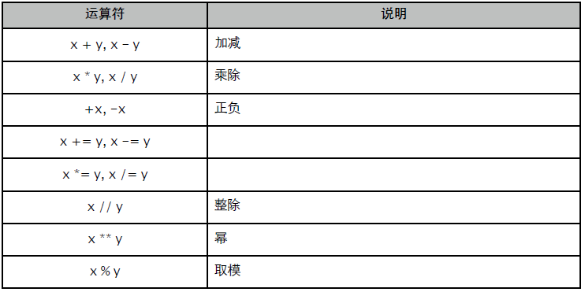
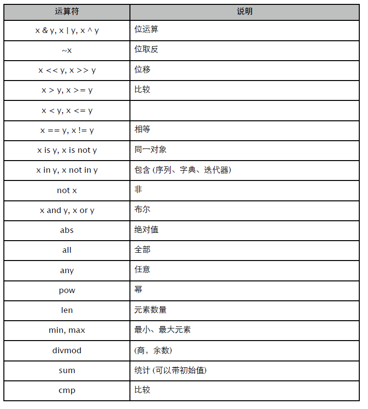

表达式
句法规则
Python 源码格式有点特殊。首先，可能因为出生年代久远的缘故，编译器默认编码采用 ASCII，而非当前通行的 UTF-8。其次，就是强制缩进格式让很多人 "纠结"，甚至 "望而却步"。
源文件编码
下面这样的错误，初学时很常见。究其原因，还是编译器默认将文件当成 ASCII 码的缘故。
SyntaxError: Non-ASCII character '\xe4' in file ./main.py on line 4, but no encoding
declared; see http://www.python.org/peps/pep-0263.html for details解决方法：在文件头部添加正确的编码标识。
$ cat main.py
#/usr/bin/env python
# coding=utf-8
def main():
print "世界末日！" # 玛雅人都是骗人的
if __name__ == "__main__":
main()也可以写成：
# -*- coding:utf-8 -*-强制缩进
缩进是强制性的语法规则。通常建议用 4 个空格代替 TAB，好在多数编辑器都能自动转换。
最大的麻烦就是从网页拷贝代码时，缩进丢失导致源码成了乱码。解决方法是：
- 像很多 C 程序员那样，在 block 尾部添加 "# end" 注释。
- 如果嫌不好看，可自定义一个 end 伪关键字。
#/usr/bin/env python
# coding=utf-8
__builtins__.end = None # 看这里，看这里……
def test(x):
if x > 0:
print "a"
else:
print "b"
end
end
def main():
print "世界末日！" # 再次鄙视玛雅人！(*_*)
end
if __name__ == "__main__":
main()只要找到 end，就能确定 code block 的缩进范围了。
注释
注释从 # 开始，到行尾结束，不支持跨行。大段的描述可以用 """doc"""。
语句
可以用 ";" 将多条语句写在同一行，或者用 "\" 将一条语句拆分成多行。
>>> d = {}; d["a"] = 1; d.items()
[('a', 1)]
>>> for k, v in \
... d.items():
... print k, v
a 1某些 ()、[]、{} 表达式无需 "\" 就可写成多行。
>>> d = {
... "a": 1,
... "b": 2
... }
>>> d.pop("a",
... 2)
1帮助
可以非常方便地为函数、模块和类添加帮助信息。
>>> def test():
... """
... func help
... """
... pass
>>> test.__doc__
'\n func help\n '
>>> class User(object):
... """User Model"""
...
... def __init__(self):
... """user.__init__"""
... pass
>>> User.__doc__
'User Model'
>>> User.__init__.__doc__
'user.__init__'在 shell 用 help() 查看帮助信息，它会合并对象所有成员的帮助内容。
命名规则
命名规则不算复杂，只不过涉及私有成员命名时有点讲究。
- 必须以字母或下划线开头，且只能是下划线、字母和数字的组合。
- 不能和语言保留字相同。
- 名字区分大小写。
- 模块中以下划线开头的名字视为私有。
- 以双下划线开头的类成员名字视为私有。
- 同时以双下划线开头和结尾的名字，通常是特殊成员。
- 单一下划线代表最后表达式的返回值。
>>> s = set("abc")
>>> s.pop()
'a'
>>> _
'a'保留字 (包括 Python 3)：
False class finally is return
None continue for lambda try
True def from nolcoal while
and del global not with
as elif if or yield
assert else import pass
break except in raise赋值
除非在函数中使用关键字 global、nolocal 指明外部名字，否则赋值语句总是在当前名字空间创建或修改 {name:object} 关联。
与 C 以 block 为隔离，能在函数中创建多个同名变量不同，Python 函数所有代码共享同一名字空间，会出现下面这样的状况。
>>> def test():
... while True:
... x = 10
... break
... print locals()
... print x # 这个写法在 C 里面会报错。
>>> test()
{'x': 10}
10支持用序列类型或迭代器对多个名字同时赋值。
>>> a, b = "a", "b"
>>> a, b = "ab"
>>> a, b = [1, 2]
>>> a, b = xrange(2)一旦值多过名字数量，会引发异常。要么切片，要么用 "_" 补位。
>>> a, b = "abc"
Traceback (most recent call last):
a, b = "abc"
ValueError: too many values to unpack
>>> a, b, _ = "abc"
>>> a, b = "abc"[:2]Python 3 对此提供了更好的支持。
Python 3.3.0 (default, Nov 4 2012, 20:26:43)
>>> a, *b, c = "a1234c"
>>> a, b, c
('a', ['1', '2', '3', '4'], 'c')表达式
if
只需记住将 "else if" 换成 "elif" 即可。
>>> x = 10
>>> if x > 0:
... print "+"
... elif x < 0:
... print "-"
... else:
... print "0"
+可以改造得简单一些。
>>> x = 1
>>> print "+" if x > 0 else ("-" if x < 0 else "0")
+
>>> x = 0
>>> print "+" if x > 0 else ("-" if x < 0 else "0")
0
>>> x = -1
>>> print "+" if x > 0 else ("-" if x < 0 else "0")
-或者利用 and、or 条件短路，写得更简洁些。
>>> x = 1
>>> print (x > 0 and "+") or (x < 0 and "-") or "0"
+
>>> x = 0
>>> print (x > 0 and "+") or (x < 0 and "-") or "0"
0
>>> x = -1
>>> print (x > 0 and "+") or (x < 0 and "-") or "0"
-可以将两次比较合并成一个表达式。
>>> x = 10
>>> if (5 < x <= 10): print "haha"
haha!条件表达式不能包含赋值语句，习惯此种写法的需要调整一下了。
>>> if (x = 1) > 0: pass
File "<ipython-input-4-bc2d73931d91>", line 1
if (x = 1) > 0: pass
^
SyntaxError: invalid syntaxwhile
比我们熟悉的 while 多了个可选的 else 分支。如果循环没有被中断，那么 else 就会执行。
>>> x = 3
>>> while x > 0:
... x -= 1
... else:
... print "over"
over!
>>> while True:
... x += 1
... if x > 3: break
... else:
... print "over"利用 else 分支标记循环逻辑被完整处理是个不错的主意。
for
更名为 foreach 可能更合适一些，用来循环处理序列和迭代器对象。
>>> for i in xrange(3): print i
0
1
2
>>> for k, v in {"a":1, "b":2}.items(): print k, v # 多变量赋值
a 1
b 2
>>> d = ((1, ["a", "b"]), (2, ["x", "y"]))
>>> for i, (c1, c2) in d: # 多层展开
... print i, c1, c2
1 a b
2 x y同样有个可选的 else 分支。
>>> for x in xrange(3):
... print x
... else:
... print "over"
0
1
2
over!
>>> for x in xrange(3):
... print x
... if x > 1: break
... else:
... print "over"
0
1
2要实现传统的 for 循环，需要借助 enumerate() 返回序号。
>>> for i, c in enumerate("abc"):
... print "s[{0}] = {1}".format(i, c)
s[0] = a
s[1] = b
s[2] = cpass
占位符，用来标记空代码块。
>>> def test():
... pass
>>> class User(object):
... passbreak / continue
break 中断循环，continue 开始下一次循环。
没有 goto、label，也无法用 break、continue 跳出多层嵌套循环。
>>> while True:
... while True:
... flag = True
... break
... if "flag" in locals(): break如果嫌 "跳出标记" 不好看，可以考虑抛出异常。
>>> class BreakException(Exception): pass
>>> try:
... while True:
... while True:
... raise BreakException()
... except BreakException:
... print "越狱成功"其实也没好看到哪去，但好歹保持内部逻辑的干净。
del
可删除名字、序列元素、字典键值，以及对象成员。
>>> x = 1
>>> "x" in globals()
True
>>> del x
>>> "x" in globals()
False
>>> x = range(10)
>>> del x[1]
>>> x
[0, 2, 3, 4, 5, 6, 7, 8, 9]
>>> x = range(10)
>>> del x[1:5] # 按切片删除
>>> x
[0, 5, 6, 7, 8, 9]
>>> d = {"a":1, "b":2}
>>> del d["a"] # key 不存在时，会抛出异常。
>>> d
{'b': 2}
>>> class User(object): pass
>>> o = User()
>>> o.name = "user1"
>>> hasattr(o, "name")
True
>>> del o.name
>>> hasattr(o, "name")
FalseGenerator
用一种优雅的方式创建列表、字典或集合。
>>> [x for x in range(10)] # 列表
[0, 1, 2, 3, 4, 5, 6, 7, 8, 9]
>>> {x for x in range(10)} # 集合
set([0, 1, 2, 3, 4, 5, 6, 7, 8, 9])
>>> {c:ord(c) for c in "abc"} # 字典
{'a': 97, 'c': 99, 'b': 98}
>>> (x for x in range(10))
<generator object <genexpr> at 0x10328a690>可带上条件进行过滤。
>>> [x for x in range(10) if x % 2]
[1, 3, 5, 7, 9]或用多个 for 子句实现嵌套。
>>> ["{0}{1}".format(c, x) for c in "abc" for x in range(3)]
['a0', 'a1', 'a2', 'b0', 'b1', 'b2', 'c0', 'c1', 'c2']这相当于：
>>> n = []
>>> for c in "abc":
... for x in range(3):
... n.append("{0}{1}".format(c, x))每个子句都可有条件表达式，内层可引用外层名字。
>>> ["{0}{1}".format(c, x) \
... for c in "aBcD" if c.isupper() \
... for x in range(5) if x % 2 \
... ]
['B1', 'B3', 'D1', 'D3']甚至可直接用做函数实参。
>>> def test(it):
... for i, x in enumerate(it):
... print "{0} = {1}".format(i, x)
>>> test(hex(x) for x in range(3))
0 = 0x0
1 = 0x1
2 = 0x2运算符
这东西没啥好说的，只要记得没 "++"、"--" 就行。


切片
序列类型支持 "切片 (slice)" 操作，可通过两个索引序号获取片段。
>>> x = range(10)
>>> x[2:6] # [2, 6)
[2, 3, 4, 5]
>>> x[2:-2] # [2, len(x) - 2)
[2, 3, 4, 5, 6, 7]支持大于 1 的步进。
>>> x[2:6:2]
[2, 4]可以忽略起始或结束序号。
>>> x[:]
[0, 1, 2, 3, 4, 5, 6, 7, 8, 9]
>>> x[:6]
[0, 1, 2, 3, 4, 5]
>>> x[7:]
[7, 8, 9]支持倒序。
>>> x[::-1]
[9, 8, 7, 6, 5, 4, 3, 2, 1, 0]
>>> x[7:3:-2]
[7, 5]可按切片范围删除序列元素。
>>> x = range(10)
>>> del x[4:8]; x
[0, 1, 2, 3, 8, 9]
>>> x = range(10)
>>> del x[::2]; x
[1, 3, 5, 7, 9]甚至不等长的切片替换。
>>> a = [1, 2, 3]
>>> a[:1] = ["a", "b", "c"]
>>> a
['a', 'b', 'c', 2, 3]布尔 and 返回短路时的最后一个值，or 返回第一个真值。要是没短路的话，返回最后一个值。
>>> 1 and 2 # True: 最后一个值
2
>>> 1 and 2 and 0 # False: 最后一个值
0
>>> 1 and 0 and 2 # False: 第一个短路值 0
0
>>> 1 or 0 # True: 第一个真值 1
1
>>> 0 or [] or 1 # True: 第一个真值 1
1
>>> 0 or 1 or ["a"] # True: 第一个真值 1
1用 and、or 实现 "三元表达式 (:)"。
>>> x = 5
>>> print x > 0 and "A" or "B"
A用 or 提供默认值。
>>> x = 5
>>> y = x or 0
>>> y
5
>>> x = None
>>> y = x or 0
>>> y
0相等
操作符 "==" 可被重载，不适合用来判断两个名字是否指向同一对象。
>>> class User(object):
... def __init__(self, name):
... self.name = name
... def __eq__(self, o):
... if not o or not isinstance(o, User): return False
... return cmp(self.name, o.name) == 0
>>> a, b = User("tom"), User("tom")
>>> a is b # is 总是判断指针是否相同。
False
>>> a == b # 通过 __eq__ 进行判断。
True类型转换
各种类型和字符串间的转换。
>>> str(123), int('123') # int
>>> bin(17), int('0b10001', 2)
>>> oct(20), int('024', 8)
>>> hex(22), int('0x16', 16)
>>> str(0.9), float("0.9") # float
>>> ord('a'), chr(97), unichr(97) # char
>>> str([0, 1, 2]), eval("[0, 1, 2]") # list
>>> str((0, 1, 2)), eval("(0, 1, 2)") # tuple
>>> str({"a":1, "b":2}), eval("{'a': 1, 'b': 2}") # dict
>>> str({1, 2, 3}), eval("{1, 2, 3}") # set常用函数
Python 2.7 可使用 print 表达式，Python 3 就只能用函数了。
>>> import sys
>>> print >> sys.stderr, "Error", 456
Error 456
>>> from __future__ import print_function
>>> print("Hello", "World", sep = ",", end = "\r\n", file = sys.stdout)
Hello,World用标准库中的 pprint.pprint() 代替 print，能看到更漂亮的输出结果。要输出到 /dev/null，可以使用 open(os.devnull, "w")。
input
input 会将输入的字符串进行 eval 处理，raw_input 直接返回用户输入的原始字符串。
>>> input("$ ")
$ 1+2+3
6
>>> raw_input("$ ")
$ 1+2+3
'1+2+3'Python 3 已经将 raw_input 重命名为 input。
用标准库 getpass 输入密码。
>>> from getpass import getpass, getuser
>>> pwd = getpass("%s password: " % getuser())
yuhen password:
>>> pwd
'123456'exit
exit([status]) 调用所有退出函数后终止进程，并返回 ExitCode。
- 忽略或 status = None，表示正常退出， ExitCode = 0。
- status =
，表示 ExiCode = 。 - 返回非数字对象表示失败，参数会被显示， ExitCode = 1。
$ cat main.py
#/usr/bin/env python
#coding=utf-8
import atexit
def clean():
print "clean..."
def main():
atexit.register(clean)
exit("Failure")
if __name__ == "__main__":
main()
$ ./main.py
Failure
clean...
$ echo $
1sys.exit() 和 exit() 完全相同。os._exit() 直接终止进程，不调用退出函数，且退出码必须是数字。
vars
获取 locals 或指定对象的名字空间。
vars() is locals() True
import sys
vars(sys) is sys.dict True
dir
获取 locals 名字空间中的所有名字，或指定对象所有可访问成员 (包括基类)。
>>> set(locals().keys()) == set(dir())
True